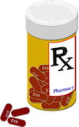

|  | ||
|
Estimated Wait Times
Using statistics to estimate the wait time that will be expected for a patient to see a Doctor/expert. The application will show the wait times for hospitals nearby allowing you to compare and choose the most logical hospital for your current situation. This will help to let the patient to plan their day accordingly.
|
Linking Health Card to Application
When you first arrive at the hospital the Nurse will ask to examine your health card. Not everyone is always carrying their health card on them for a wide variety of reasons. Linking their health card in a secure fashion to their smartphone can help to be more convenient and eliminate confusion.
|
Filling out Prescription on Phone
Once the doctor has seen you and determined if a prescription is necessary, the doctor will upload the necessary information regarding the prescription onto your phone. You can then send out the prescription to your pharmacy of choice and pick it up at a later time. This feature eliminates the time it takes waiting for the prescription to be filled and prevents you from potentially losing the prescription.
|
|
Alerting Patients who Leave Before Seeing a Doctor
It is common for a patient to leave the hospital before they see an expert. The patient may be leaving for a variety of reasons such as they begin to feel much better than when thery arrived or they are getting fed up with waiting so long. For safety reasons sometimes Health Links has to follow up on this situation and check in on the patient. Using the smartphone’s GPS the app will alert the hospital and the patient when the patient leaves the premises without seeing an expert. This will tell the patient to return back to the hospital or ask the patient why they left.
|
Filling Out Necessary Information and Alerting Arrival
Once the patient decides the most logical hospital for their situation they can alert the specific hospital that you will be coming there and approximately in how long. Allow you to fill out routine and necessary information before you even arrive at the emergency room. This would include family doctor information, a list of current medications, your allergies, your current medical conditions, what exactly happened, and any additional notes that the Doctor/Nurse should know. This ultimately will allow the nurse to be more thorough while cutting down on the time needed to assess each patient.
|